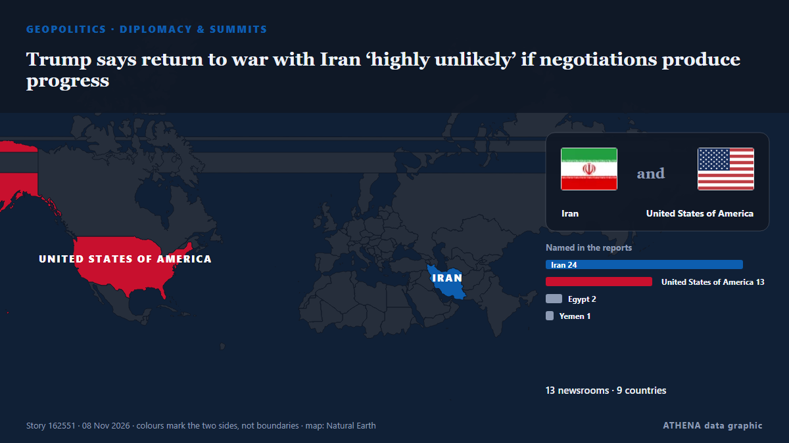

Diplomacy & summits
SponsoredPresented by  Cybernetics and Artificial Intelligence Lab Welcome to the Cybernetics and Artificial Intelligence Laboratory, established at the Department of Business Administration of the National and Kapodistrian University of Athens. The lab is headed by Professor Dimitrios Thomakos. The lab aims to do research that can be published in top venues. Our research uses tools and methods of Artificial Intelligence, and lies in the following areas: - Forecasting - Decision making - Cyber security - Finance We are always looking forward to collaborating with exceptional students!
Cybernetics and Artificial Intelligence Lab Welcome to the Cybernetics and Artificial Intelligence Laboratory, established at the Department of Business Administration of the National and Kapodistrian University of Athens. The lab is headed by Professor Dimitrios Thomakos. The lab aims to do research that can be published in top venues. Our research uses tools and methods of Artificial Intelligence, and lies in the following areas: - Forecasting - Decision making - Cyber security - Finance We are always looking forward to collaborating with exceptional students!
| 26 Oct | 0 |
|---|---|
| 27 Oct | 0 |
| 28 Oct | 1 |
| 29 Oct | 0 |
| 30 Oct | 0 |
| 31 Oct | 0 |
| 1 Nov | 0 |
| 2 Nov | 1 |
| 3 Nov | 0 |
| 4 Nov | 1 |
| 5 Nov | 10 |
| 6 Nov | 3 |
| 7 Nov | 6 |
| 8 Nov | 1 |

Trump says return to war with Iran ‘highly unlikely’ if negotiations produce progress
“It depends on whether or not they sign a very strong agreement,” Trump told CNN. from The Jerusalem Post
Italy blames pro-Russian hackers for leaking Tajani’s personal data
Italy’s prime minister, Giorgia Meloni, has blamed pro-Russian hackers for posting the foreign minister’s personal data on the dark web. from The Next Web
Europe will be represented at US-mediated Ukraine talks in Abu Dhabi: France
France has announced that Europe will be represented at US-mediated talks in Abu Dhabi with Russia and Ukraine. from Arab News
Kremlin confirms trilateral talks on Ukraine set for Nov 10-11 in Abu Dhabi
The United States will bring together delegations from Ukraine and Russia in Abu Dhabi on November 10-11 to discuss ending Russia's conflict with Ukraine, post-conflict security agreements and… from CGTN (World)
Missiles target Kyiv and wound 5 as Ukraine prepares for talks with Russia and the US
Missile explosions wounded at least nine people across Ukraine Saturday, as Kyiv and Moscow prepared for new talks next week with the United States. from ABC News (International)
PM Modi extends Diwali wishes, to mark festival in Bastar: ‘Where Naxalism once held sway’
PM Modi extended Diwali greetings to people across the country on Sunday. from Hindustan Times
Putin orders seizure of more Japan Tobacco assets in Russia
Russian President Vladimir Putin on Friday placed more Russian assets of Japan Tobacco Inc. under control, a day after signing a dec. from Mainichi (English)
Qatar says its mediation efforts between US and Iran continue to prevent escalation
Nov 7 (Reuters) - Qatar's Prime Minister said the country's mediation efforts between the US and Iran were continuing to prevent the situation in the region from spiraling out of control, Al Jazeera… from Al-Monitor
Trump signs order to preserve Oval Office as national monument
The order comes after Trump made a series of big changes to the decor of the Oval Office and tore down the White House East Wing. from BBC News
Stephen Miller replaces Susie Wiles as Trump's White House chief of staff after GOP's midterm defeat
Just days after the Republican Party's resounding defeat in the midterms, U.S. from CBC News (alternative feed)
Trump says ‘big, beautiful agreement’ on Ukraine ‘might involve all of Europe’
British troops are due to take part in a major Coalition of the Willing military exercise to prepare for potential peace. from Evening Standard (London)
Nato seeks ‘just’ end to Ukraine war as Trump touts deal involving Europe
The US president predicted a major deal with Russia covering Ukraine and wider European affairs, fuelling fears of a US pivot towards Moscow. from Free Malaysia Today
Rubio denies plans to leave post for White House bid
WASHINGTON: US Secretary of State Marco Rubio dismissed reports Thursday that he was planning to leave the Trump administration as he weighs his next moves after Republicans’ losses in midterm… from Arab News
Melania Trump urges ‘humanity over war’ with Ukraine, Russia officials
Melania Trump facilitated a meeting between Ukrainian and Russian officials at the White House, calling for a focus on ‘humanity over war.’ This comes as talks are scheduled for the next week in Abu… from Arab News
Iran’s security chief discusses regional security with Putin
MOSCOW: Russian President Vladimir Putin met Iranian top security official Mohsen Rezaei at the Kremlin, Iran’s state media reported on Thursday, after Iranian negotiators met with mediators to… from Arab News
AP Exclusive: Trump administration held talks with Iran on deporting Iranians during the war
Court documents reveal President Donald Trump's administration held secret talks with Iran about deporting Iranians during the ongoing war. from The Independent
Italy’s Meloni blasts Europe’s ‘disarray’ on Ukraine talks
Italian Prime Minister Giorgia Meloni criticizes the European Union’s handling of Ukraine negotiations, labeling it ‘disorderly’ and urging a unified voice. from Arab News
Trump says he met Putin envoy, sees Ukraine deal soon
The US President predicted there would be a “big agreement” involving more than just Ukraine. from The Straits Times
Putin will not attend Britain's G20 summit, UK PM Burnham saysre
LONDON: Prime Minister Andy Burnham has said Russian President Vladimir Putin will not travel to a G20 summit in Britain because of UK sanctions against him, The Economist newspaper reported on… from Business Recorder